Doors Wiki Page
Entities
Entities or monsters are the threats you face during your playthrough.
Here are the types of entities:
Types of entities
>Node Entities: They rush throught rooms and try to find you , most of them oneshot kill.
>Gimmick entities: These entities have a certain gimmick to deal with and are most commonly stationary.
>Grand Entities:Basically bosses or hard to deal with entities like The Figure , Seek and Queen Grumble . Cannot be crucified.
Node entities:
Rush:
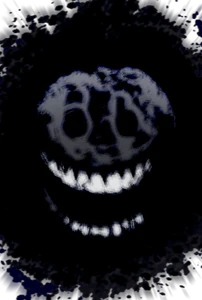
Rush is the most common entity in the game.
appearing around 6-13 times in a main floor.Can only spawn in main floors
His indicator is the flickering of lights before his occurance.
Ambush:
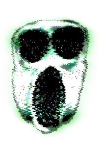
A rare entity usually appearing at around doors 75 to 90 can appear earlier.
He make a very loud scream to indicate his occurance.Only spawns in main floors.
Can rebound and is significantly harder than rush
Blitz:
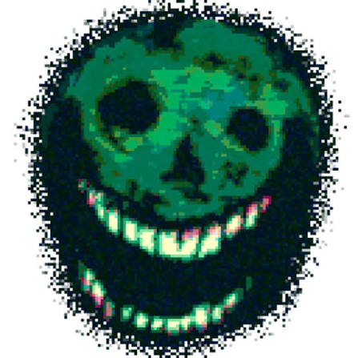
Only spawns in the backdoor subfloor . Purely exists to waste your time
Can double back to check hiding spots before leaving.Its indicator is flickering lights.
Bash:
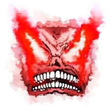
One of the only node entities which cannot oneshot you
Make an loud sound akin to a plane engine before rushing through
Deals around 70 damage (Note: All Node entities deal a specific amount of damage but almost all are above 100)
Only spawns in the archives subfloor
Scribbles:
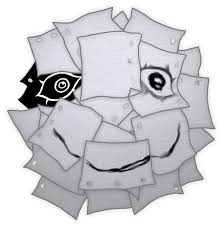
Covers a room with paper before slowly moving through
will throw papers which cut the player , around 10 damage per paper.
Only spwans in the archives subfloor.
Gimmick entities
Eyes:
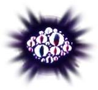
In The Hotel Eyes is a stationary entity
gains the ability to teleport in The Mines
Its gimmick is that it will damage you if you look at it.
Lookman:
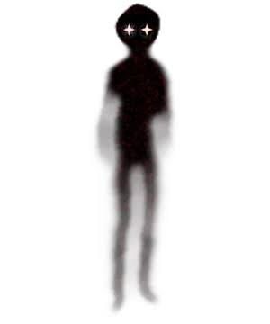
Only spawns in the backdoors subfloor
Similar to Eyes but damges once evry few seconds rather than continuosly
Very Annoying You have been warned.
Haste:
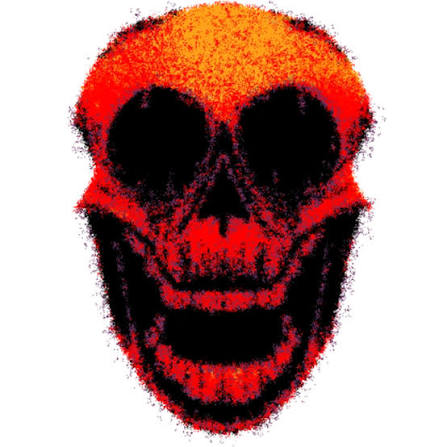
Can only spawn int he backdoor subfloor
Spawns when the timers on the doors hit zero
the only way to counter him is to pull the levrs which add time.
Snare:
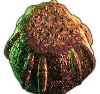
Spawns in The Hotel(Doors 91-99)and everywhere in the Outdoors subfloor
Will stun the player when walked on and can end Hotel runs due to rush coming while the player is stunned
Can be very annoying.
Giggles
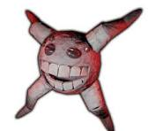
Only spawns in the Mines main floor(subject to change)
Hangs from the ceiling and giggles ,will drop down to bite players.
can be stunned with light sources
Screech
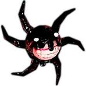
Is a older gigggle which has been infected by Seek.
Will whisper to players to indicate its appearance.
Gets scared of when looked at.
Grumbles
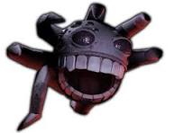
Is an adult of the giggle species and are mostly male with one female being the queen.
Hunts in the nest and waits for food
Laughs a lot
There are alot more but im tired for now.
Gimmick Entities to be continued
For more entities:Doors Actual Wiki